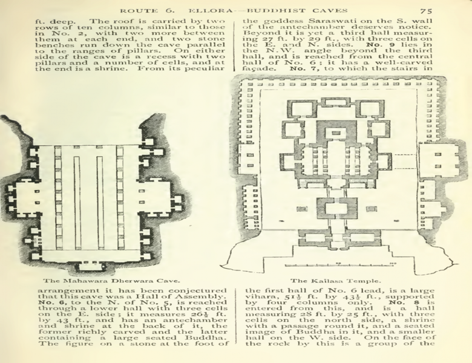

55555
5555
The Kailasha (IAST: Kailāśa) or Kailashanatha (IAST: Kailāśanātha) temple is the largest of the rock-cut Hindu temples at the Ellora Caves, Maharashtra, India. A megalith carved from a rock cliff face, it is considered one of the most remarkable cave temples in the world because of its size, architecture and sculptural treatment, and "the climax of the rock-cut phase of Indian architecture".The top of the superstructure over the sanctuary is 32.6 metres (107 feet) above the level of the court below,although the rock face slopes downwards from the rear of the temple to the front.
The Kailasa temple (Cave 16) is the largest of the 34 Buddhist, Jain and Hindu cave temples and monasteries known collectively as the Ellora Caves, ranging for over 2 kilometres (1.5 miles) along the sloping basalt cliff at the site. Most of the excavation of the temple is generally attributed to the eighth century Rashtrakuta king Krishna I (r. c. 756 – 773), with some elements completed later. The temple architecture shows traces of Pallava and Chalukya styles. The temple contains a number of relief and free-standing sculptures on a grand scale equal to the architecture, though only traces remain of the paintings which originally decorated it.
History of Kailasa temple
Kailasa temple lacks a dedicatory inscription, but there is no doubt that it was commissioned by a Rashtrakuta ruler. Its construction is generally attributed to the Rashtrakuta king Krishna I (r. 756-773 CE), based on two epigraphs that link the temple to "Krishnaraja" (IAST Kṛṣṇarāja):
The Vadodara copper-plate inscription (c. 812-813 CE) of Karkaraja II (a ruler
of a Rashtrakuta
branch of Gujarat) records the grant of a village in present-day Gujarat. It mentions
Krishnaraja as the patron of Kailasanatha, and also mentions a Shiva temple at Elapura (Ellora).
It states that the king constructed a temple so wondrous that even the gods and the architect
were astonished. Most scholars believe that this is a reference to the Kailasa Shiva temple
at Elora.
The Kadaba grant of Govinda Prabhutavarsha similarly appears to credit Krishnaraja with the
construction of the temple.
However, the attribution of the temple to Krishna I is not completely certain because these epigraphs are not physically connected to the caves, and do not date Krishnaraja's reign. Moreover, the land grants issued by Krishna's successors do not contain any references to the Kailasa temple.
The Kailasa temple features the use of multiple distinct architectural and sculptural styles. This, combined with its relatively large size, has led some scholars to believe that its construction spanned the reigns of multiple kings. Some of the temple reliefs feature the same style as the one used in the Dashavatara cave (Cave 15), which is located next to the temple. The Dashavatara cave contains an inscription of Krishna's predecessor and nephew Dantidurga (c. 735–756 CE). Based on this, art historian Hermann Goetz (1952) theorized that the construction of the Kailasa temple began during the reign of Dantidurga. Krishna consecrated its first complete version, which was much smaller than the present-day temple. According to Goetz, Dantidurga's role in the temple construction must have been deliberately suppressed, as Krishna sidelined Dantidurga's sons to claim the throne after his death.Based on analysis of the different styles, Goetz further hypothesized that the later Rashtrakuta rulers also extended the temple. These rulers include Dhruva Dharavarsha, Govinda III, Amoghavarsha, and Krishna III. According to Goetz, the 11th century Paramara ruler Bhoja commissioned the elephant-lion frieze on the lower plinth during his invasion of Deccan, and added a new layer of paintings. Finally, Ahilyabai Holkar commissioned the last layer of paintings in the temple.
M. K. Dhavalikar (1982) analyzed the architecture of the temple, and concluded that the major part of the temple was completed during the reign of Krishna I, although he agreed with Goetz that some other parts of the temple complex can be dated to the later rulers. According to Dhavalikar, the following components were completed by Krishna: the main shrine, its gateway, the nandi-mandapa, the lower-storey, the elephant-lion frieze, the court elephants and the victory pillars.Dhavalikar admits that the most important sculpture of the temple, which depicts Ravana shaking the Kailasa mountain, appears to have been built after the main edifice. This sculpture is considered as one of the finest pieces of Indian art, and it is possible that the temple came to be known as Kailasa after it. Dhavalikar theorizes that this sculpture was carved around 3-4 decades after the completion of the main shrine, on the basis of its similarity to the tandava sculpture in the Lankeshvar cave.[H. Goetz dated this relief to the reign of Krishna III.Like Goetz, Dhavalikar attributes some other structures in the temple complex to the later rulers. These include the Lankeshvar cave and the shrine of the river goddesses (possibly constructed during the reign of Govinda III).Dhavalikar further theorizes that the excavation of the Dashavatara cave, which began during the reign of Dantidurga, was completed during the reign of Krishna I. This explains the similarities between the sculptures in the two caves.
Kailasa Design?
The Kailasa temple architecture is different from the earlier style prevalent in the Deccan region. As stated above, it appears to be based on the Virupaksha Temple at Pattadakal and the Kailasa temple at Kanchi, but it is not an exact imitation of these two temples. The southern influence on the temple architecture can be attributed to the involvement of Chalukya and Pallava artists in its construction. The indigenous Deccan artisans appear to have played a subordinate role in the temple's construction.
The entrance to the temple courtyard features a low gopuram.[1] Most of the deities at the left of the entrance are Shaivaite (affiliated with Shiva) while on the right hand side the deities are Vaishnavaites (affiliated with Vishnu). A two-storeyed gateway opens to reveal a U-shaped courtyard. The dimensions of the courtyard are 82 m x 46 m at the base. The courtyard is edged by a columned arcade three stories high. The arcades are punctuated by huge sculpted panels, and alcoves containing enormous sculptures of a variety of deities. Originally flying bridges of stone connected these galleries to central temple structures, but these have fallen. Some of the most famous sculptures are Shiva the ascetic, Shiva the dancer, Shiva being warned by Parvati about the demon Ravana, and river goddess.
Within the courtyard, there is a central shrine dedicated to Shiva, and an image of his mount Nandi (the sacred bull). The central shrine housing the lingam features a flat-roofed mandapa supported by 16 pillars, and a Dravidian shikhara. The shrine – complete with pillars, windows, inner and outer rooms, gathering halls, and an enormous stone lingam at its heart – is carved with niches, plasters, windows as well as images of deities, mithunas (erotic male and female figures) and other figures. As is traditional in Shiva temples, Nandi sits on a porch in front of the central temple. The Nandi mandapa and main Shiva temple are each about 7 metres high, and built on two storeys. The lower stories of the Nandi Mandapa are both solid structures, decorated with elaborate illustrative carvings. The base of the temple has been carved to suggest that elephants are holding the structure aloft. A rock bridge connects the Nandi Mandapa to the porch of the temple. The base of the temple hall features scenes from Mahabharata and Ramayana. .
Sources
wikipedia
Author:--- wikipedia Editors
URL :--- https://en.wikipedia.org/wiki/Brihadisvara_Temple,_Thanjavur